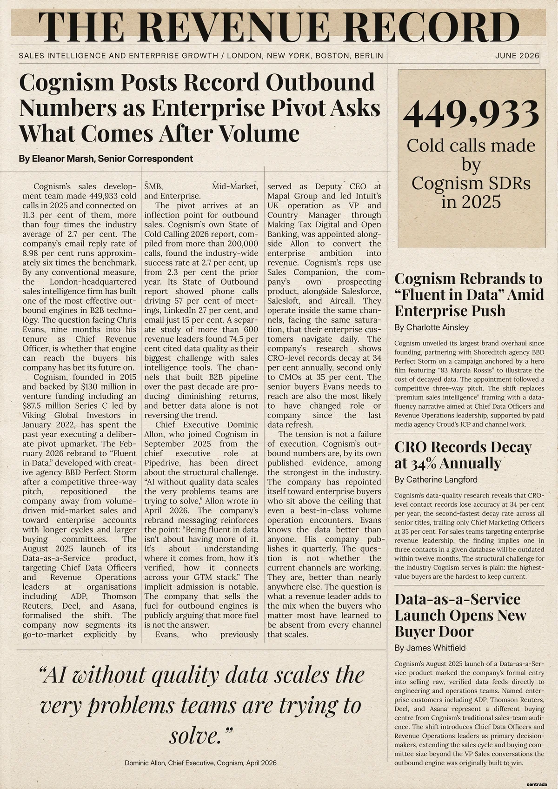

The Front Page
A newspaper front page, written and designed for one person. Their company, their market, the story they are living right now, turned into news. Every fact is real, sourced, and verified. The recipient opens it and sees their own world on the front page, reported with the kind of detail that makes them wonder who wrote it.
Best when you want to demonstrate serious research and make the recipient feel impossible to overlook.